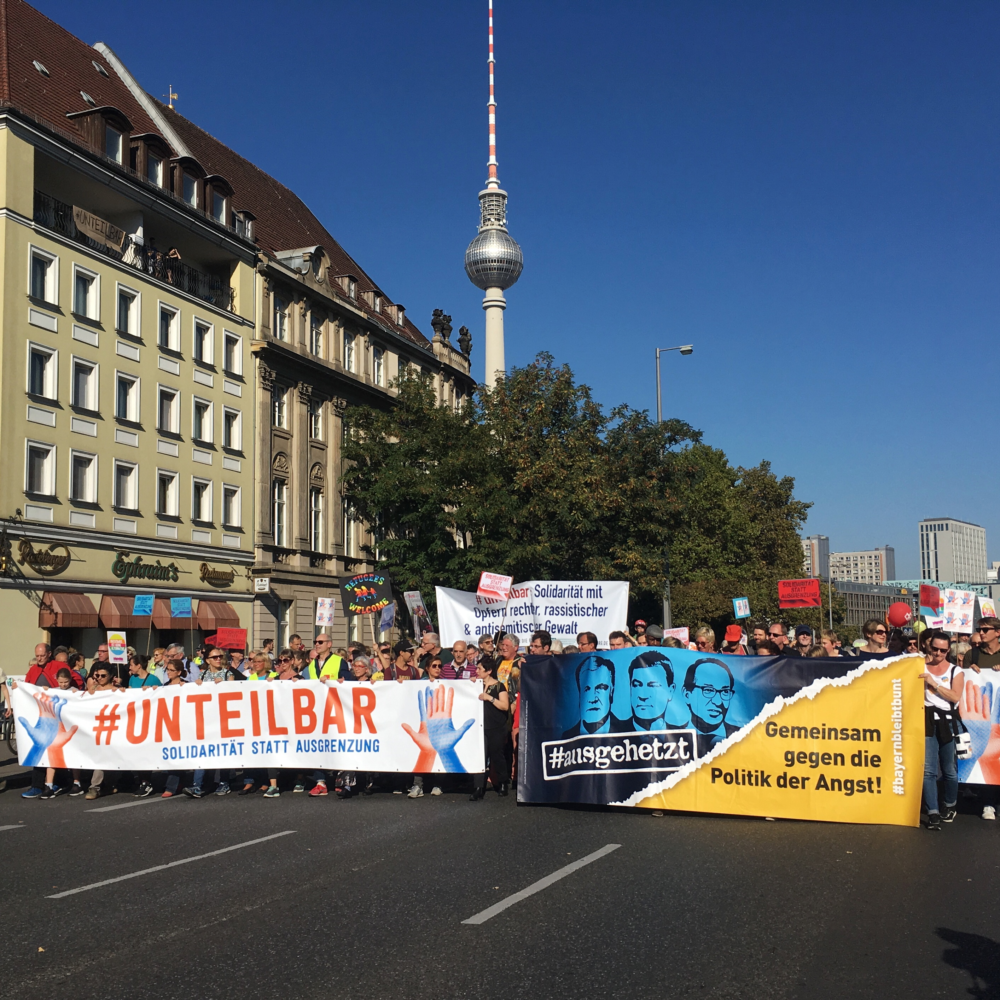
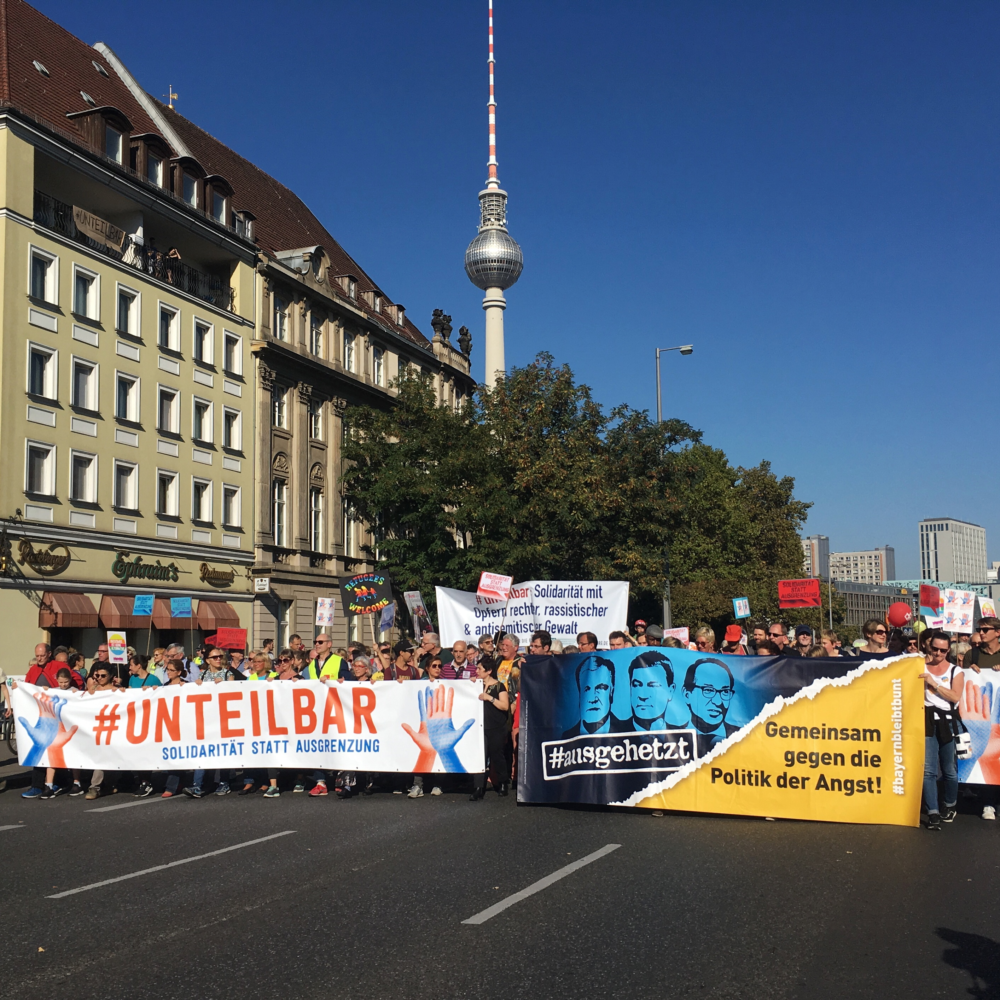

This year has been one of transition at the Engine Room, not only in leadership, but also in how we work as an organisation. Our focus was on strengthening our foundations, and I’m proud that we’ve done that in many different ways, including by completing a smooth leadership transition.
We end 2018 as a team of 16, with staff based on five continents. Together, we sharpened team and organisational strategies, honed internal processes to support well-being and built solutions to challenges. We hired our first team member based in Asia, developed an organisation-wide learning strategy, produced research on how data and technology can be used effectively and responsibly and provided direct support to more than 100 organisations.
As we grew, we reflected on how our evolution as a remote, international team has shaped our core values and how to hold ourselves accountable to these values. We are lucky to have a team that approaches work with humility, excellence and compassion. This year’s retrospective is shaped in large part by our organisational values, and we’re proud to share them publicly for the first time!
As I evolve in the role of Executive Director, I am constantly reminded of how much we owe to those who came before us and who support us externally – former team members who contributed with their hard work, co-founder Alix Dunn who shaped this team into who we are today with her intelligence and vision, and our wonderful partners and funders who trust and support us.
As ever, our digital door is open, and we all welcome your thoughts, comments and questions.
- Julia Keseru, Executive Director


 
